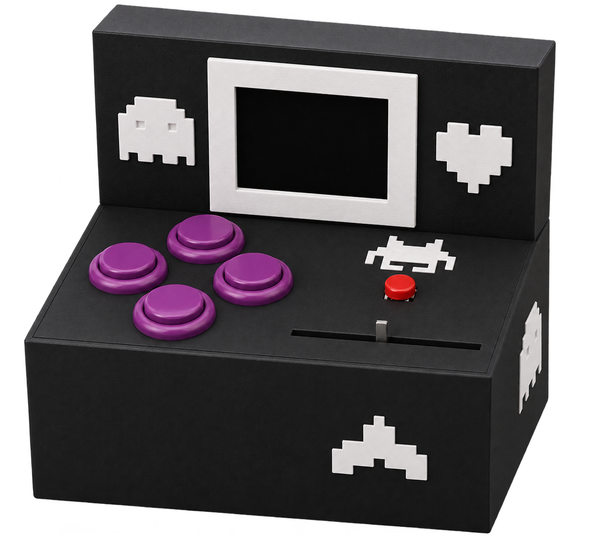
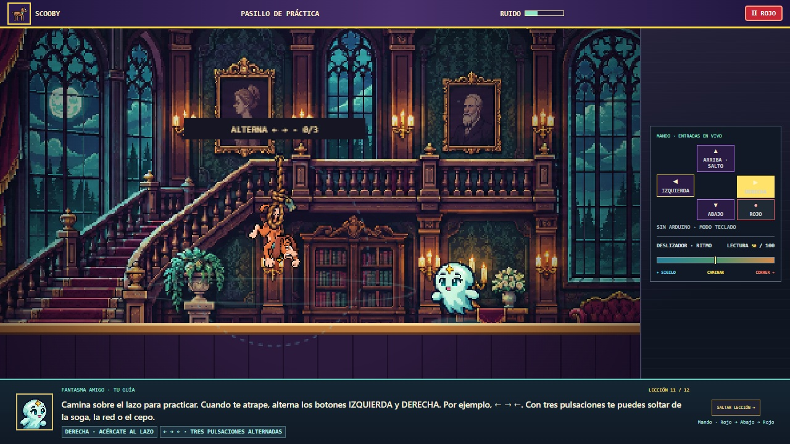

STAGE 5: MINIARCADE
--- SYSTEM TYPE · MANDO FÍSICO CON ARDUINO ---
1. EL MANDO ARCADE
Controlador impreso en 3D para jugar Misterios por todas partes. El mando se conecta al computador por USB y el juego se muestra en la pantalla del computador.

| CONTROL | FUNCIÓN |
|---|---|
| Cuatro botones en cruz | Izquierda y derecha mueven al personaje. Arriba salta y abajo interactúa o activa la habilidad. |
| Botón rojo | Confirma en los menús y pausa durante el juego. |
| Deslizador horizontal | Cambia de sigilo a carrera. En las pruebas ajusta la radio, el zoom o la luz. |
2. CONEXIONES DEL ARDUINO
El Arduino Uno R3 lee cinco botones digitales y el potenciómetro B103 de 10 kΩ. El cable USB alimenta la placa y transmite las lecturas al juego.
BOTONES
| CONTROL | PIN DE SEÑAL |
|---|---|
| Izquierda | D2 |
| Derecha | D3 |
| Arriba | D4 |
| Abajo | D5 |
| Botón rojo | D6 |
DESLIZADOR B103
| TERMINAL | ARDUINO |
|---|---|
| Cursor (señal) | A0 |
| Un extremo de la pista | 5 V |
| Otro extremo | GND |
En cada botón arcade, NO va al pin indicado, COM va a GND y NC queda libre. En el botón rojo, una pata de un par va a D6 y una pata del otro par va a GND. El deslizador comparte el GND del Arduino.
3. INVESTIGA LA MANSIÓN
El fantasma guía enseña a usar el mando en el entrenamiento. Después, en la Mansión Brumosa, sintoniza la radio, revela huellas y reúne pistas para resolver el caso.

Mando USB. Conecta el Arduino y selecciona Conectar control en Chrome o Edge de escritorio.
Teclado. ← → para moverte, ↑ o Espacio para saltar, F para interactuar, Enter para confirmar o pausar y Re Pág / Av Pág para el deslizador.